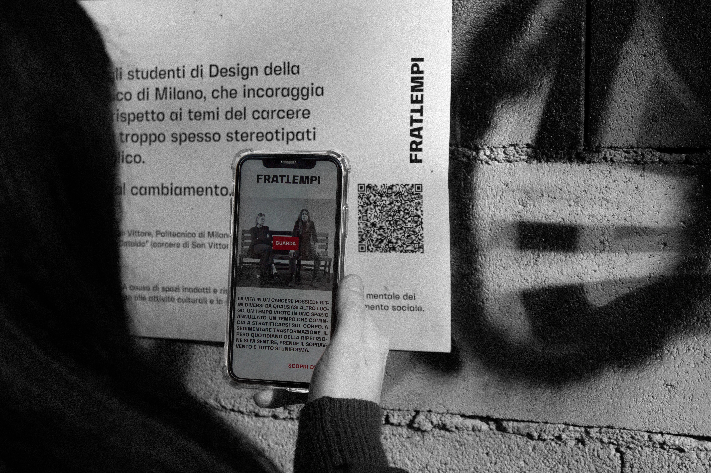
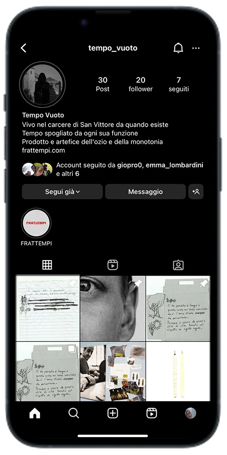

→ VIDEO
The visual artifact of Frattempi stages a dialogue between two characters who personify "free time" and "empty time." They represent the perceptions and lived experiences of individuals both inside and outside of prison. Crucially, the narratives, locations, and characters themselves never explicitly reveal whether the condition is one of freedom or detention.
→ POSTER CAMPAIGN


The posters are artifacts displayed by Tempo Libero featuring stereotypical phrases about prison, which are then debunked in red. They include a QR code that directs users to the Frattempi landing page, where the video content can be viewed.
→ GUERRILLA
The guerrilla marketing consists of an intervention by Tempo Vuoto, which disseminates prohibition signs to obstruct the activities of Tempo Libero in Piazza Sant’Agostino, a popular gathering spot near the San Vittore District House.


The instagram profile Tempo_vuoto is the personal profile of Tempo Vuoto and functions like a diary, documenting a journey of growing awareness regarding prison conditions. The posts consist of reflections on idleness and the sensation of inertia, alongside stories from inmates, descriptions of objects handcrafted in prison during free hours, and other creative ways detainees find to pass the time.